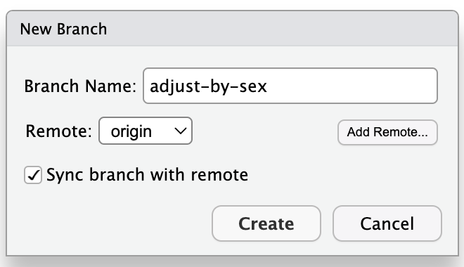
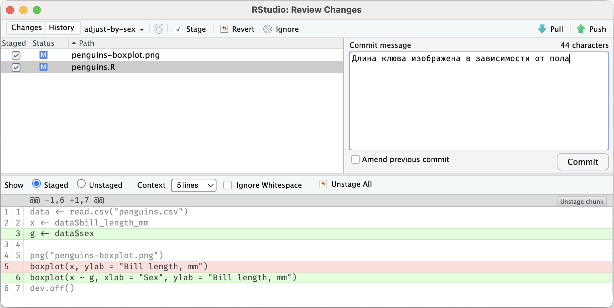
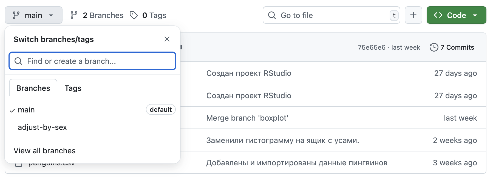
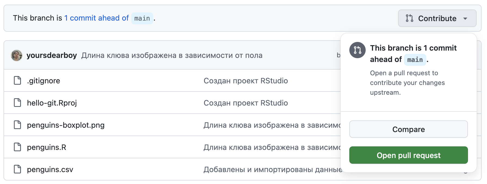
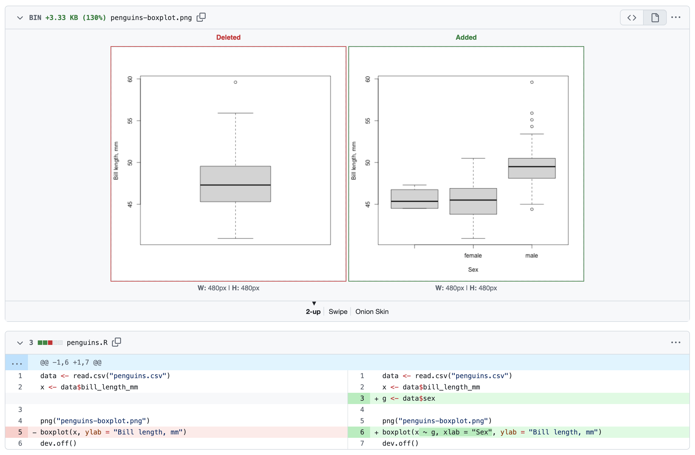
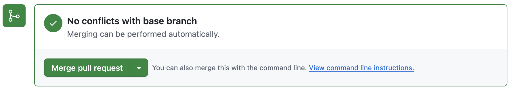
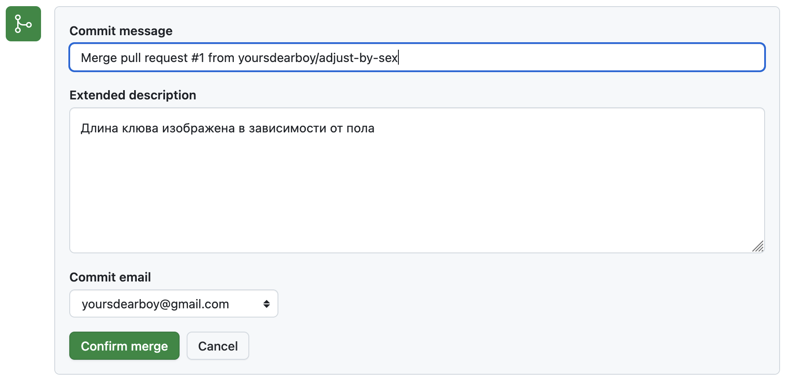
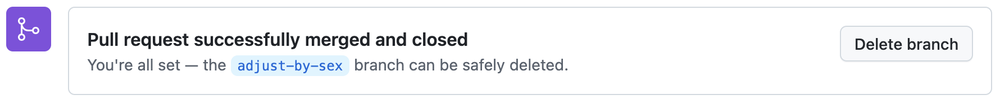

Глава 17 Pull Request
Pull Request — это механизм GitHub для слияния веток загруженных в удаленный репозиторий, позволяющий просмотреть, обсудить и проверить предлагаемые изменения перед слиянием. Похожий механизм существует и на других платформах.
Орнитолог проходящий мимо нашего репозитория обратит внимание, что длину клюва пингвина лучше рассматривать в зависимости от пола. Он даже может предложить необходимые изменения при помощи Pull Request.
Создайте ветку с названием adjust-by-sex при помощи кнопки New branch на панели Git в RStudio. Убедитесь, что справа от кнопки вместо названия ветки по умолчанию main выводится название созданной ветки adjust-by-sex.

Отредактируйте скрипт penguins.R, добавив пол в код для построения ящика с усами. Код приведен ниже, не забывайте, что вы можете сравнить изменения по сравнению с оригиналом при помощи кнопки Diff на панели Git.
data <- read.csv("penguins.csv")
x <- data$bill_length_mm
g <- data$sex
png("penguins-boxplot.png")
boxplot(x ~ g, xlab = "Sex", ylab = "Bill length, mm")
dev.off()Сохраните и выполните скрипт penguins.R.
Создайте коммит включив в него скрипт и обновленную диаграмму penguins-boxplot.png.

После создания коммита нажмите кнопку Push в верхнем правом углу или на панели Git. Так как у вас полные права на редактирование репозитория, то новая ветка будет загружена на GitHub. Прохожему орнитологу пришлось бы создать свою копию репозитория или просить дать доступ средствами GitHub.
Перейдите на страницу репозитория в GitHub и убедитесь, что ветка была загружена и содержит сделанные измнения, для этого выберите ее в выпадающем меню появляющемся при нажатии кнопки с названием ветки main.

При просмотре ветки отличной от основной, GitHub предложит создать из нее Pull Request — предложение автору репозитория слить изменения из этой ветки. Нажмите кнопку Contribute и в выпадающем меню выберите Open pull request.

GitHub предложит ввести заголовок и описание предлагаемых изменений, правило хорошего тона кратко описать причину изменений и суть предлагаемого решения. А также, прокрутите страницу создания Pull Request и проверьте изменения, которые вы предлагаете, после чего нажмите кнопку Create pull Request под полем с описанием.

На странице Pull Request владельцу репозитория доступна опция слить предложенные изменения. Нажмите кнопку Merge pull request внизу страницы. В открывшемся окне GitHub предложить ввести текст коммита, как если бы мы делали слияние ветки в терминале. Оставьте или измените текст и нажмите кнопку Confirm merge После успешного слияния ветку можно удалить.



Вернемся к нашему проекту в RStudio.
Слияние было выполнено онлайн на GitHub, а значит необходимо загрузить изменения в наш локальный репозиторий, т.е. сделать pull.
Переключитесь на ветку main при помощи панели Git и нажмите кнопку Pull.
Убедитесь, что теперь ветка main содержит актуальные изменения в файлах penguins.R и penguins-boxplot.png.